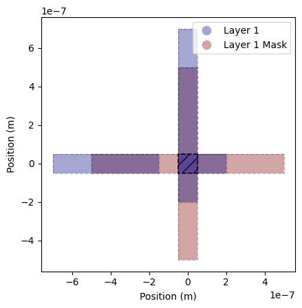

PVD simulation example
Start with a simple miniature cross
[32]:
from SQDMetal.Comps import Junctions
[16]:
%load_ext autoreload
%autoreload 2
import os
os.environ["KMP_DUPLICATE_LIB_OK"]="TRUE"
os.environ["PMIX_MCA_gds"]="hash"
# Import useful packages
from qiskit_metal import designs, draw
from qiskit_metal import MetalGUI, Dict, open_docs
from SQDMetal.Comps.Xmon import Xmon
from SQDMetal.Comps.Polygons import PolyRectangle
# Set up chip design as planar
design = designs.DesignPlanar({}, overwrite_enabled=True)
# Set up chip dimensions
design.chips.main.size.size_x = '5um'
design.chips.main.size.size_y = '5um'
design.chips.main.size.size_z = '100um'
design.chips.main.size.center_x = '0mm'
design.chips.main.size.center_y = '0mm'
Q1 = Xmon(design, 'cross', options = dict(pos_x = '0', pos_y='0',
cross_width='1um', cross_height='1um',
vBar_width='100nm', hBar_width='100nm',
vBar_gap=0, hBar_gap=0))
gndCut = PolyRectangle(design, 'gndCutout', options=dict(pos_x='-2.5um',pos_y='-2.5um',
end_x='2.5um',end_y='2.5um',
is_ground_cutout=True))
# gui = MetalGUI(design)
# gui.rebuild()
# design.rebuild()
The autoreload extension is already loaded. To reload it, use:
%reload_ext autoreload
Now consider dual evaporation for the given layer
[17]:
design.chips['main']['evaporations'] = Dict(
layer1=Dict(
bottom_layer='200nm',
top_layer='100nm',
undercut='200nm',
pvd1 = Dict(
angle_phi = '-90',
angle_theta = '45',
metal_thickness = '100nm'
),
pvd2 = Dict(
angle_phi = '0',
angle_theta = '45'
)
)
)
[18]:
from SQDMetal.Utilities.PVD_Shadows import PVD_Shadows
%matplotlib inline
[19]:
pvdSh = PVD_Shadows(design)
pvdSh.plot_layer(1,'separate', plot_mask=True)

Plot junction region between (overlap) evaporation steps
[20]:
#Without mask
pvdSh.plot_all_layers(plot_overlap=True, plot_mask=False)
Total area of overlapping regions: 0.010000 µm²

[21]:
#With mask
pvdSh.plot_all_layers(plot_overlap=True, plot_mask=True)
Total area of overlapping regions: 0.010000 µm²

[ ]: